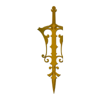

Builder Mode
Philosophy into processes, values into agreements, charisma into teams and insight into Business architecture.

Information & Technology | Micro & Macro
Business Strategy, Technical Compliance and Design Architecture for complex decisions: converting scattered signals into Operating Systems, Stewardship, Trust and Peace of Mind.
About
Welcome. I am Taiyzun Shabbir Shahpurwala, based in Bombay, India, with active affiliations across Dubai, London and New York. This portfolio gathers a Business identity built through Information & Technology and Micro & Macro judgement: a practice that observes, absorbs, interprets, names, structures, leads and protects. Strategic Thought becomes working architecture through Business Strategy, Technical Delivery, Compliance, Strategic Due Diligence, Design Architecture, Data Hygiene, Communication Matrices, Documentation Logic and Operational Execution.
Among the meaningful chapters of my path was my past service with the Office of Dr. Huzaifa Khorakiwala, alongside work connected with Wockhardt, Jupiter Events LLC, Wockhardt Foundation, the I Am Peacekeeper Movement, the Global Justice, Love & Peace Summit, the EIRENE Awards and Billionaires for Peace. I honour that season with Gratitude; it now belongs to the archive of work that shaped me, not the present title that defines me.
Earlier chapters gave this practice its material. At STYLETEK, my Father's steadfast principles met systems modernisation in garments and textiles, where operations, inventory logic and vendor coordination had to be made exact. At Gabbana Fashions, craftsmanship sharpened my Respect for Beauty, fit and Perfectionist detail. At The Wadia Group, I deepened Information Architecture and process Design through website development, workflow alignment and organisational reporting. Channel [V], Star TV and live production rooms trained the other half of the field: timing, signal, audience, operating Sp@cE and consequence.
International field chapters carried the work through Dubai/UAE, the United States and the United Kingdom: Dubai, Bombay, Goa, Deltaville, New York, Winnetka, Aurora, Miami Beach, Detroit, Colorado Springs, Washington D.C., West Hollywood, Oakland, London and Cheltenham. The organisations connected to that chapter include Taskin Computers, Taher & Sons, Citi, Walden's Marina, Stingray Marina, Project Renewal, Golkonda, Studio Winnetka, Mission Colorado District, Nurseling Dade, Detroit Housing, Salvation Army, SRM, One Common Unity, Federation of Musicians, Wellness Studio, FASHIONABLYIN, BBC Studios and Severn Care Limited. I hold that season as practical Business education: service, sequence, people, place, pressure, Micro detail, Macro awareness and Strategic clarity across Business, digital and human Sp@cEs.
Across Technology, Media, Cultural Diplomacy, Strategic Communications and Social Innovation, the work is to make complex human, Technical and commercial material understandable, well-held and decision-ready. It is Builder Mode: Values turned into agreements, Insight turned into Architecture and Wisdom turned into Operating Systems.
Each chapter now belongs to a larger Business Portfolio, guided by seven Operating Values: Truth, Gratitude, Forgiveness, Love, Humility, Giving and Patience and carried with Integrity, Beauty, Respect and Peace of Mind. The work must be precise enough for Technical and Compliance records, spacious enough for Strategy and disciplined enough to protect Trust, Meaning and the whole field.
Structured Thinking for Digital Systems, Information Architecture, Data Hygiene, Workflow Mapping, Access Logic and Technology Communication
Fine Detail and Big Picture Held Together: Stakeholder Maps, Delivery Calendars, Risk Context and Executive Consequence
Strategic Framing, Operational Priorities, Communication Matrices and Clear Macro-to-Micro Delivery Paths
Fact-Led Review of Information, Stakeholders, Constraints, Risks, Dependencies and Decision-Ready Context
Systems Architect Thinking, Visual Order, Perfect Detail, Beauty in Structure and Disciplined Execution
Dubai/UAE, United States and United Kingdom Work Across Service Operations, Event Delivery, Community Systems, HR Coordination, Research and Public-Facing Execution
Technology, Media, Cultural Diplomacy, Strategic Communications and Social Innovation Held with Business Discipline and Human Understanding
Built through TimE and shaped by Sp@cE, each chapter has taught me to hold Information & Technology with Micro & Macro discipline: Strategic in judgement, Technical in execution, attentive to Strategic Due Diligence and faithful to Truth, Gratitude, Forgiveness, Love, Humility, Giving and Patience.
Principles
Accurate Records, Direct Language and Clear Alignment Between Promise, Process and Delivery
Respectful Acknowledgement of People, Context, TimE, Privacy and Consequence
Corrective Maturity, Learning, Release and Forward Movement After Complexity
Care for Work, People, Beauty, Detail and Outcomes Worth Durable Attention
Quiet Strength, Listening Before Designing and Learning Before Leading
Contribution, Service and Value Creation Across Business, Digital and Human Sp@cEs
Disciplined TimE, Strategic Restraint and Refinement Before Declaration